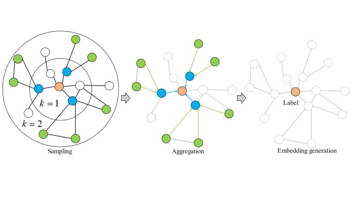

GraphSAGE Tutorial: Complete Guide with Mathematical Foundation and Implementation#
Table of Contents#
1. Introduction#
What is GraphSAGE?#
GraphSAGE (Graph SAmple and aggreGatE) is a powerful Graph Neural Network architecture introduced by Hamilton et al. in 2017. Unlike traditional Graph Convolutional Networks (GCNs) that require the entire graph structure during training, GraphSAGE can efficiently learn on large graphs through sampling and can generalize to unseen nodes (inductive learning).
Key Advantages of GraphSAGE:#
Inductive Learning: Can generalize to unseen nodes and graphs
Scalability: Handles large graphs through neighbor sampling
Flexibility: Multiple aggregation functions (mean, LSTM, pooling)
Efficiency: Doesn’t require full graph Laplacian computation
Some Applications:#
Social network analysis
Protein function prediction
Citation network classification
Recommendation systems
Fraud detection
2. Mathematical Foundation#
2.1 Core Algorithm#
GraphSAGE operates through a sample-and-aggregate paradigm. For each node, it samples a fixed number of neighbors and aggregates their features.
Forward Propagation Algorithm:#
For each layer:
Sample neighbors: For each node v, sample a fixed number of neighbors N(v)
Aggregate: Compute aggregated representation from neighbors
Update: Combine node’s previous representation with aggregated neighbors

Mathematical Formulation:#
Step 1: Neighbor Sampling $\( N_k(v) = SAMPLE(N(v), S_k) \)$ Where:
\(N(v)\): All neighbors of node \(v\)
\(S_k\): Sample size for layer \(k\)
\(N_{k(v)}\): Sampled neighbors at layer \(k\)
Step 2: Aggregation $\( h_{N(v)}^k = AGGREGATE_k({h_u^{k-1}, ∀u ∈ N_{k(v)}}) \)$
Step 3: Update $\( h_{v^k} = σ(W^k · CONCAT(h_v^{k-1}, h_{N(v)}^k)) \)$
Where:
\(h_v^k\): Node \(v\)’s representation at layer \(k\)
\(W^k\): Learnable weight matrix at layer \(k\)
σ: Activation function (e.g., ReLU)
CONCAT: Concatenation operation
2.2 Aggregation Functions#
GraphSAGE supports multiple aggregation functions:
2.2.1 Mean Aggregator#
The mean aggregator is:
Symmetric: Order of neighbors doesn’t matter
Differentiable: Allows gradient-based optimization
Simple: Computationally efficient
2.2.2 LSTM Aggregator#
The LSTM aggregator:
Sequential: Processes neighbors in random order
Expressive: Can capture complex neighbor interactions
Asymmetric: Different orderings can produce different results
2.2.3 Pooling Aggregator#
The pooling aggregator:
Symmetric: Order-invariant like mean
Selective: Focuses on most important features
Non-linear: Captures complex patterns
2.3 Neighborhood Sampling Strategy#
🔹 Uniform Sampling#
In uniform sampling, each neighbor has an equal probability of being selected:
That is, neighbors are sampled uniformly at random from the set of neighbors of node \(v\).
🔹 Importance Sampling#
In importance sampling, neighbors are sampled with probability proportional to an importance score or edge weight:
Here, \(w(v, u)\) denotes the weight or importance score of the edge between nodes \(v\) and \(u\).
2.4 Loss Functions in Graph Representation Learning#
Node Classification#
For node classification, the cross-entropy loss is computed over the labeled nodes:
\(h_v^{(K)}\): Final representation of node \(v\) after \(K\) GNN layers
\(y_{v,c}\): One-hot encoded label of node \(v\) for class \(c\)
\(\sigma\): Softmax function producing class probabilities
\(\mathcal{V}_{\text{train}}\): Set of labeled training nodes
Graph Classification#
For graph classification, the loss is similarly computed at the graph level:
\(\text{READOUT}(G)\): Graph-level embedding produced by a readout function (e.g., mean, sum, max)
\(y_{G,c}\): One-hot encoded label for graph \(G\)
\(\mathcal{G}_{\text{train}}\): Set of labeled training graphs
Where READOUT can be:
Mean pooling: \(READOUT(G) = MEAN({h_v^K, ∀v ∈ G})\)
Max pooling: \(READOUT(G) = MAX({h_v^K, ∀v ∈ G})\)
Sum pooling: \(READOUT(G) = SUM({h_v^K, ∀v ∈ G})\)
2.5 Normalization#
GraphSAGE applies L2 normalization to node representations: $\( h_v^k = h_v^k / ||h_v^k||_2 \)$
This normalization:
Prevents exploding gradients
Improves training stability
Enables better generalization
3. Architecture Deep Dive#
3.1 Multi-Layer Architecture#
Input Features (X) → GraphSAGE Layer 1 → ... → GraphSAGE Layer K → Output
Each layer transforms node representations by:
Sampling neighbors
Aggregating neighbor features
Combining with node’s own features
Applying non-linear transformation
3.2 Inductive vs Transductive Learning#
Transductive Learning (Traditional GCN):
Requires all nodes during training
Cannot generalize to unseen nodes
Uses global graph structure
Inductive Learning (GraphSAGE):
Learns from node features and local structure
Can generalize to unseen nodes
Uses learned aggregation functions
3.3 Computational Complexity#
For a K-layer GraphSAGE:
Time Complexity: \(O(K × |V| × S^K × D)\)
Space Complexity: \(O(|V| × D)\)
Where:
\(K\): Number of layers
\(|V|\): Number of nodes
\(S\): Sample size per layer
\(D\): Feature dimension
4. Implementation#
4.1 Basic GraphSAGE Implementation#
import torch
import torch.nn as nn
import torch.nn.functional as F
from torch_geometric.nn import SAGEConv, GCNConv
from torch_geometric.data import Data, DataLoader
from torch_geometric.utils import to_networkx, subgraph
import torch_geometric.transforms as T
from torch_geometric.loader import NeighborSampler
import numpy as np
import networkx as nx
import matplotlib.pyplot as plt
from sklearn.metrics import accuracy_score, classification_report, confusion_matrix
import seaborn as sns
from typing import List, Tuple, Optional
import random
from collections import defaultdict
class GraphSAGELayer(nn.Module):
"""
Custom GraphSAGE layer implementation with multiple aggregation functions.
"""
def __init__(self, in_dim: int, out_dim: int, aggregator: str = 'mean',
bias: bool = True, normalize: bool = True):
"""
Initialize GraphSAGE layer.
Args:
in_dim: Input feature dimension
out_dim: Output feature dimension
aggregator: Type of aggregation ('mean', 'max', 'lstm', 'pool')
bias: Whether to use bias
normalize: Whether to apply L2 normalization
"""
super(GraphSAGELayer, self).__init__()
self.in_dim = in_dim
self.out_dim = out_dim
self.aggregator = aggregator
self.normalize = normalize
# Weight matrices
self.W_self = nn.Linear(in_dim, out_dim, bias=bias)
self.W_neigh = nn.Linear(in_dim, out_dim, bias=bias)
# Aggregator-specific components
if aggregator == 'lstm':
self.lstm = nn.LSTM(in_dim, in_dim, batch_first=True)
elif aggregator == 'pool':
self.pool_mlp = nn.Sequential(
nn.Linear(in_dim, in_dim),
nn.ReLU(),
nn.Linear(in_dim, in_dim)
)
self.reset_parameters()
def reset_parameters(self):
"""Initialize parameters."""
nn.init.xavier_uniform_(self.W_self.weight)
nn.init.xavier_uniform_(self.W_neigh.weight)
if self.aggregator == 'lstm':
self.lstm.reset_parameters()
elif self.aggregator == 'pool':
for layer in self.pool_mlp:
if isinstance(layer, nn.Linear):
nn.init.xavier_uniform_(layer.weight)
def forward(self, x: torch.Tensor, edge_index: torch.Tensor,
size: Optional[Tuple[int, int]] = None) -> torch.Tensor:
"""
Forward pass of GraphSAGE layer.
Args:
x: Node features [num_nodes, in_dim]
edge_index: Edge indices [2, num_edges]
size: Size of source and target nodes
Returns:
Updated node features [num_nodes, out_dim]
"""
# Separate source and target nodes
if size is None:
size = (x.size(0), x.size(0))
# Get neighbor features
row, col = edge_index
x_neigh = x[row] # Source node features
# Aggregate neighbor features
if self.aggregator == 'mean':
x_agg = self.mean_aggregator(x_neigh, col, size[1])
elif self.aggregator == 'max':
x_agg = self.max_aggregator(x_neigh, col, size[1])
elif self.aggregator == 'lstm':
x_agg = self.lstm_aggregator(x_neigh, col, size[1])
elif self.aggregator == 'pool':
x_agg = self.pool_aggregator(x_neigh, col, size[1])
else:
raise ValueError(f"Unknown aggregator: {self.aggregator}")
# Update node features
x_self = self.W_self(x[:size[1]])
x_neigh_agg = self.W_neigh(x_agg)
out = x_self + x_neigh_agg
# Apply activation
out = F.relu(out)
# L2 normalization
if self.normalize:
out = F.normalize(out, p=2, dim=1)
return out
def mean_aggregator(self, x_neigh: torch.Tensor, col: torch.Tensor,
num_nodes: int) -> torch.Tensor:
"""Mean aggregation function."""
return torch.zeros(num_nodes, self.in_dim, device=x_neigh.device).scatter_add_(
0, col.unsqueeze(1).expand(-1, self.in_dim), x_neigh
) / torch.bincount(col, minlength=num_nodes).float().clamp(min=1).unsqueeze(1)
def max_aggregator(self, x_neigh: torch.Tensor, col: torch.Tensor,
num_nodes: int) -> torch.Tensor:
"""Max aggregation function."""
out = torch.full((num_nodes, self.in_dim), float('-inf'), device=x_neigh.device)
return out.scatter_reduce_(0, col.unsqueeze(1).expand(-1, self.in_dim),
x_neigh, reduce='amax', include_self=False)
def lstm_aggregator(self, x_neigh: torch.Tensor, col: torch.Tensor,
num_nodes: int) -> torch.Tensor:
"""LSTM aggregation function."""
# Group neighbors by target node
neighbors = defaultdict(list)
for i, target in enumerate(col):
neighbors[target.item()].append(x_neigh[i])
# Apply LSTM to each node's neighbors
out = torch.zeros(num_nodes, self.in_dim, device=x_neigh.device)
for node, neigh_features in neighbors.items():
if len(neigh_features) > 0:
# Stack and process through LSTM
neigh_tensor = torch.stack(neigh_features).unsqueeze(0)
_, (hidden, _) = self.lstm(neigh_tensor)
out[node] = hidden[-1, 0] # Take last hidden state
return out
def pool_aggregator(self, x_neigh: torch.Tensor, col: torch.Tensor,
num_nodes: int) -> torch.Tensor:
"""Pooling aggregation function."""
# Apply MLP to neighbor features
pooled_neigh = self.pool_mlp(x_neigh)
# Max pooling
out = torch.full((num_nodes, self.in_dim), float('-inf'), device=x_neigh.device)
return out.scatter_reduce_(0, col.unsqueeze(1).expand(-1, self.in_dim),
pooled_neigh, reduce='amax', include_self=False)
class GraphSAGE(nn.Module):
"""
Multi-layer GraphSAGE model for node classification.
"""
def __init__(self, in_dim: int, hidden_dim: int, out_dim: int,
num_layers: int = 2, aggregator: str = 'mean',
dropout: float = 0.5, normalize: bool = True):
"""
Initialize GraphSAGE model.
Args:
in_dim: Input feature dimension
hidden_dim: Hidden layer dimension
out_dim: Output dimension (number of classes)
num_layers: Number of GraphSAGE layers
aggregator: Aggregation function type
dropout: Dropout probability
normalize: Whether to apply L2 normalization
"""
super(GraphSAGE, self).__init__()
self.num_layers = num_layers
self.dropout = dropout
# GraphSAGE layers
self.layers = nn.ModuleList()
# First layer
self.layers.append(GraphSAGELayer(in_dim, hidden_dim, aggregator, normalize=normalize))
# Hidden layers
for _ in range(num_layers - 2):
self.layers.append(GraphSAGELayer(hidden_dim, hidden_dim, aggregator, normalize=normalize))
# Output layer
if num_layers > 1:
self.layers.append(GraphSAGELayer(hidden_dim, out_dim, aggregator, normalize=False))
else:
# Single layer case
self.layers[0] = GraphSAGELayer(in_dim, out_dim, aggregator, normalize=False)
def forward(self, x: torch.Tensor, edge_index: torch.Tensor) -> torch.Tensor:
"""
Forward pass through GraphSAGE layers.
Args:
x: Node features [num_nodes, in_dim]
edge_index: Edge indices [2, num_edges]
Returns:
Node representations [num_nodes, out_dim]
"""
for i, layer in enumerate(self.layers):
x = layer(x, edge_index)
# Apply dropout (except for last layer)
if i < len(self.layers) - 1:
x = F.dropout(x, p=self.dropout, training=self.training)
return x
def inference(self, x: torch.Tensor, edge_index: torch.Tensor,
batch_size: int = 1024) -> torch.Tensor:
"""
Inference mode with neighbor sampling for large graphs.
"""
# For simplicity, we'll use the regular forward pass
# In practice, you'd implement batch-wise inference with sampling
return self.forward(x, edge_index)
class GraphSAGEPyG(nn.Module):
"""
GraphSAGE implementation using PyTorch Geometric's SAGEConv.
"""
def __init__(self, in_dim: int, hidden_dim: int, out_dim: int,
num_layers: int = 2, dropout: float = 0.5,
aggregator: str = 'mean', normalize: bool = True):
super(GraphSAGEPyG, self).__init__()
self.num_layers = num_layers
self.dropout = dropout
self.convs = nn.ModuleList()
# First layer
self.convs.append(SAGEConv(in_dim, hidden_dim, aggr=aggregator, normalize=normalize))
# Hidden layers
for _ in range(num_layers - 2):
self.convs.append(SAGEConv(hidden_dim, hidden_dim, aggr=aggregator, normalize=normalize))
# Output layer
if num_layers > 1:
self.convs.append(SAGEConv(hidden_dim, out_dim, aggr=aggregator, normalize=False))
else:
self.convs[0] = SAGEConv(in_dim, out_dim, aggr=aggregator, normalize=False)
def forward(self, x: torch.Tensor, edge_index: torch.Tensor) -> torch.Tensor:
for i, conv in enumerate(self.convs):
x = conv(x, edge_index)
if i < len(self.convs) - 1:
x = F.relu(x)
x = F.dropout(x, p=self.dropout, training=self.training)
return x
def create_synthetic_graph(num_nodes: int = 1000, num_features: int = 32,
num_classes: int = 3, avg_degree: int = 5) -> Data:
"""
Create a synthetic graph for demonstration.
Args:
num_nodes: Number of nodes
num_features: Number of node features
num_classes: Number of classes
avg_degree: Average node degree
Returns:
PyTorch Geometric Data object
"""
# Generate random features
x = torch.randn(num_nodes, num_features)
# Create random graph structure (ensuring connectivity)
edges = []
# Create a connected graph using preferential attachment
for i in range(1, num_nodes):
# Connect to existing nodes with probability proportional to degree
if i == 1:
edges.append([0, 1])
else:
# Get node degrees
degrees = defaultdict(int)
for edge in edges:
degrees[edge[0]] += 1
degrees[edge[1]] += 1
# Sample number of connections
num_connections = min(np.random.poisson(avg_degree), i)
# Select nodes to connect to
probabilities = np.array([degrees[j] + 1 for j in range(i)])
probabilities = probabilities / probabilities.sum()
targets = np.random.choice(i, size=num_connections,
replace=False, p=probabilities)
for target in targets:
edges.append([i, target])
# Convert to tensor
edge_index = torch.tensor(edges, dtype=torch.long).t().contiguous()
# Make undirected
edge_index = torch.cat([edge_index, edge_index.flip(0)], dim=1)
# Remove self-loops and duplicates
edge_index = torch.unique(edge_index, dim=1)
# Generate labels based on node features and structure
# Use a simple heuristic: cluster based on feature similarity
from sklearn.cluster import KMeans
kmeans = KMeans(n_clusters=num_classes, random_state=42)
y = torch.tensor(kmeans.fit_predict(x.numpy()), dtype=torch.long)
# Create train/val/test masks
num_train = int(0.6 * num_nodes)
num_val = int(0.2 * num_nodes)
indices = torch.randperm(num_nodes)
train_mask = torch.zeros(num_nodes, dtype=torch.bool)
val_mask = torch.zeros(num_nodes, dtype=torch.bool)
test_mask = torch.zeros(num_nodes, dtype=torch.bool)
train_mask[indices[:num_train]] = True
val_mask[indices[num_train:num_train + num_val]] = True
test_mask[indices[num_train + num_val:]] = True
data = Data(x=x, edge_index=edge_index, y=y,
train_mask=train_mask, val_mask=val_mask, test_mask=test_mask)
return data
def train_graphsage(model: nn.Module, data: Data, num_epochs: int = 200,
learning_rate: float = 0.01, weight_decay: float = 5e-4) -> dict:
"""
Train GraphSAGE model.
Args:
model: GraphSAGE model
data: Graph data
num_epochs: Number of training epochs
learning_rate: Learning rate
weight_decay: Weight decay for regularization
Returns:
Training history dictionary
"""
device = torch.device('cuda' if torch.cuda.is_available() else 'cpu')
model.to(device)
data = data.to(device)
optimizer = torch.optim.Adam(model.parameters(), lr=learning_rate, weight_decay=weight_decay)
criterion = nn.CrossEntropyLoss()
history = {
'train_loss': [],
'train_acc': [],
'val_loss': [],
'val_acc': []
}
model.train()
for epoch in range(num_epochs):
# Training step
optimizer.zero_grad()
out = model(data.x, data.edge_index)
train_loss = criterion(out[data.train_mask], data.y[data.train_mask])
train_loss.backward()
optimizer.step()
# Evaluation
model.eval()
with torch.no_grad():
out = model(data.x, data.edge_index)
# Training metrics
train_pred = out[data.train_mask].argmax(dim=1)
train_acc = (train_pred == data.y[data.train_mask]).float().mean()
# Validation metrics
val_loss = criterion(out[data.val_mask], data.y[data.val_mask])
val_pred = out[data.val_mask].argmax(dim=1)
val_acc = (val_pred == data.y[data.val_mask]).float().mean()
history['train_loss'].append(train_loss.item())
history['train_acc'].append(train_acc.item())
history['val_loss'].append(val_loss.item())
history['val_acc'].append(val_acc.item())
if epoch % 20 == 0:
print(f'Epoch {epoch:03d}, Train Loss: {train_loss:.4f}, Train Acc: {train_acc:.4f}, '
f'Val Loss: {val_loss:.4f}, Val Acc: {val_acc:.4f}')
model.train()
return history
def evaluate_model(model: nn.Module, data: Data) -> dict:
"""
Evaluate trained model on test set.
Args:
model: Trained GraphSAGE model
data: Graph data
Returns:
Evaluation metrics dictionary
"""
device = torch.device('cuda' if torch.cuda.is_available() else 'cpu')
model.to(device)
data = data.to(device)
model.eval()
with torch.no_grad():
out = model(data.x, data.edge_index)
# Test predictions
test_pred = out[data.test_mask].argmax(dim=1)
test_acc = (test_pred == data.y[data.test_mask]).float().mean()
# Convert to numpy for sklearn metrics
y_true = data.y[data.test_mask].cpu().numpy()
y_pred = test_pred.cpu().numpy()
# Calculate detailed metrics
report = classification_report(y_true, y_pred, output_dict=True)
results = {
'test_accuracy': test_acc.item(),
'classification_report': report,
'y_true': y_true,
'y_pred': y_pred
}
return results
def plot_training_history(history: dict):
"""Plot training history."""
fig, (ax1, ax2) = plt.subplots(1, 2, figsize=(12, 4))
# Loss plot
ax1.plot(history['train_loss'], label='Train Loss', color='blue')
ax1.plot(history['val_loss'], label='Validation Loss', color='red')
ax1.set_xlabel('Epoch')
ax1.set_ylabel('Loss')
ax1.set_title('Training and Validation Loss')
ax1.legend()
ax1.grid(True)
# Accuracy plot
ax2.plot(history['train_acc'], label='Train Accuracy', color='blue')
ax2.plot(history['val_acc'], label='Validation Accuracy', color='red')
ax2.set_xlabel('Epoch')
ax2.set_ylabel('Accuracy')
ax2.set_title('Training and Validation Accuracy')
ax2.legend()
ax2.grid(True)
plt.tight_layout()
plt.show()
def plot_confusion_matrix(y_true: np.ndarray, y_pred: np.ndarray, class_names: List[str] = None):
"""Plot confusion matrix."""
cm = confusion_matrix(y_true, y_pred)
plt.figure(figsize=(8, 6))
sns.heatmap(cm, annot=True, fmt='d', cmap='Blues',
xticklabels=class_names or range(len(np.unique(y_true))),
yticklabels=class_names or range(len(np.unique(y_true))))
plt.title('Confusion Matrix')
plt.xlabel('Predicted')
plt.ylabel('Actual')
plt.show()
def visualize_graph_embeddings(model: nn.Module, data: Data, layer_idx: int = -1):
"""Visualize learned node embeddings using t-SNE."""
from sklearn.manifold import TSNE
device = torch.device('cuda' if torch.cuda.is_available() else 'cpu')
model.to(device)
data = data.to(device)
model.eval()
with torch.no_grad():
# Get embeddings from specified layer
x = data.x
for i, layer in enumerate(model.layers):
x = layer(x, data.edge_index)
if i == layer_idx:
embeddings = x.cpu().numpy()
break
else:
embeddings = x.cpu().numpy()
# Apply t-SNE
tsne = TSNE(n_components=2, random_state=42, perplexity=30)
embeddings_2d = tsne.fit_transform(embeddings)
# Plot
plt.figure(figsize=(10, 8))
scatter = plt.scatter(embeddings_2d[:, 0], embeddings_2d[:, 1],
c=data.y.cpu().numpy(), cmap='tab10', alpha=0.7)
plt.colorbar(scatter)
plt.title(f'Node Embeddings Visualization (Layer {layer_idx})')
plt.xlabel('t-SNE 1')
plt.ylabel('t-SNE 2')
plt.show()
def compare_aggregators(data: Data, aggregators: List[str] = ['mean', 'max', 'pool']):
"""Compare different aggregation functions."""
results = {}
for agg in aggregators:
print(f"\n--- Training with {agg} aggregator ---")
# Create model
model = GraphSAGEPyG(
in_dim=data.x.size(1),
hidden_dim=64,
out_dim=len(torch.unique(data.y)),
num_layers=2,
aggregator=agg,
dropout=0.5
)
# Train model
history = train_graphsage(model, data, num_epochs=200)
# Evaluate
eval_results = evaluate_model(model, data)
results[agg] = {
'history': history,
'test_accuracy': eval_results['test_accuracy'],
'model': model
}
print(f"Test Accuracy: {eval_results['test_accuracy']:.4f}")
# Plot comparison
plt.figure(figsize=(12, 4))
# Validation accuracy comparison
plt.subplot(1, 2, 1)
for agg in aggregators:
plt.plot(results[agg]['history']['val_acc'], label=f'{agg} aggregator')
plt.xlabel('Epoch')
plt.ylabel('Validation Accuracy')
plt.title('Validation Accuracy by Aggregator')
plt.legend()
plt.grid(True)
# Test accuracy comparison
plt.subplot(1, 2, 2)
test_accs = [results[agg]['test_accuracy'] for agg in aggregators]
plt.bar(aggregators, test_accs)
plt.ylabel('Test Accuracy')
plt.title('Test Accuracy by Aggregator')
plt.grid(True, axis='y')
plt.tight_layout()
plt.show()
return results
def demonstrate_inductive_learning():
"""
Demonstrate GraphSAGE's inductive learning capability.
This function shows how GraphSAGE can generalize to unseen nodes
by training on a subset of the graph and testing on new nodes.
"""
print("=== Demonstrating Inductive Learning ===")
# Create larger graph for demonstration
full_data = create_synthetic_graph(num_nodes=2000, num_features=32,
num_classes=3, avg_degree=6)
# Split into training graph (first 1000 nodes) and test graph (remaining nodes)
train_nodes = torch.arange(1000)
test_nodes = torch.arange(1000, 2000)
# Create training subgraph
train_edge_mask = torch.isin(full_data.edge_index[0], train_nodes) & \
torch.isin(full_data.edge_index[1], train_nodes)
train_edge_index = full_data.edge_index[:, train_edge_mask]
# Remap node indices for training subgraph
node_mapping = {old_idx.item(): new_idx for new_idx, old_idx in enumerate(train_nodes)}
train_edge_index_remapped = torch.tensor([
[node_mapping[edge[0].item()], node_mapping[edge[1].item()]]
for edge in train_edge_index.t()
]).t()
# Create training data
train_data = Data(
x=full_data.x[train_nodes],
edge_index=train_edge_index_remapped,
y=full_data.y[train_nodes]
)
# Create train/val split within training nodes
num_train = int(0.8 * len(train_nodes))
train_indices = torch.randperm(len(train_nodes))
train_data.train_mask = torch.zeros(len(train_nodes), dtype=torch.bool)
train_data.val_mask = torch.zeros(len(train_nodes), dtype=torch.bool)
train_data.train_mask[train_indices[:num_train]] = True
train_data.val_mask[train_indices[num_train:]] = True
# Train GraphSAGE on training subgraph
print("Training GraphSAGE on training subgraph...")
model = GraphSAGEPyG(
in_dim=train_data.x.size(1),
hidden_dim=64,
out_dim=len(torch.unique(train_data.y)),
num_layers=2,
aggregator='mean',
dropout=0.5
)
history = train_graphsage(model, train_data, num_epochs=150)
# Test on unseen nodes
print("\nTesting on unseen nodes...")
# Create test subgraph (including connections to training nodes)
test_edge_mask = torch.isin(full_data.edge_index[0], test_nodes) | \
torch.isin(full_data.edge_index[1], test_nodes)
test_edge_index = full_data.edge_index[:, test_edge_mask]
# For simplicity, we'll test on the full graph
# In practice, you might want to sample neighbors from the training set
device = torch.device('cuda' if torch.cuda.is_available() else 'cpu')
model.to(device)
full_data = full_data.to(device)
model.eval()
with torch.no_grad():
out = model(full_data.x, full_data.edge_index)
# Evaluate on test nodes
test_pred = out[test_nodes].argmax(dim=1)
test_acc = (test_pred == full_data.y[test_nodes]).float().mean()
print(f"Inductive Test Accuracy: {test_acc:.4f}")
return model, history, test_acc
def create_citation_network_example():
"""
Create a citation network example for node classification.
This simulates a paper citation network where:
- Nodes represent papers
- Edges represent citation relationships
- Node features represent paper abstracts (simulated)
- Labels represent paper categories
"""
print("=== Creating Citation Network Example ===")
# Simulate paper data
num_papers = 1500
num_features = 128 # Simulated abstract features
num_categories = 5
# Generate paper features (simulated abstract embeddings)
np.random.seed(42)
paper_features = np.random.randn(num_papers, num_features)
# Create citation network with realistic structure
edges = []
# Papers cite older papers with higher probability
for i in range(num_papers):
# Number of citations (references)
num_citations = np.random.poisson(8) # Average 8 citations per paper
if i > 0: # Can't cite future papers
# Probability of citing decreases with age difference
cite_probs = np.exp(-0.1 * np.arange(i)) + 0.01
cite_probs = cite_probs / cite_probs.sum()
# Sample papers to cite
cited_papers = np.random.choice(
i, size=min(num_citations, i), replace=False, p=cite_probs
)
for cited_paper in cited_papers:
edges.append([i, cited_paper]) # i cites cited_paper
# Convert to PyTorch tensors
edge_index = torch.tensor(edges, dtype=torch.long).t().contiguous()
x = torch.tensor(paper_features, dtype=torch.float)
# Generate categories based on feature similarity
from sklearn.cluster import KMeans
kmeans = KMeans(n_clusters=num_categories, random_state=42)
y = torch.tensor(kmeans.fit_predict(paper_features), dtype=torch.long)
# Create temporal split (older papers for training, newer for testing)
train_ratio = 0.6
val_ratio = 0.2
split_1 = int(train_ratio * num_papers)
split_2 = int((train_ratio + val_ratio) * num_papers)
train_mask = torch.zeros(num_papers, dtype=torch.bool)
val_mask = torch.zeros(num_papers, dtype=torch.bool)
test_mask = torch.zeros(num_papers, dtype=torch.bool)
train_mask[:split_1] = True
val_mask[split_1:split_2] = True
test_mask[split_2:] = True
data = Data(x=x, edge_index=edge_index, y=y,
train_mask=train_mask, val_mask=val_mask, test_mask=test_mask)
print(f"Citation Network Statistics:")
print(f"- Number of papers: {num_papers}")
print(f"- Number of citations: {edge_index.size(1)}")
print(f"- Number of categories: {num_categories}")
print(f"- Average citations per paper: {edge_index.size(1) / num_papers:.2f}")
return data
def main_tutorial():
"""
Main tutorial function demonstrating GraphSAGE capabilities.
"""
print("=" * 60)
print("GraphSAGE Tutorial: Comprehensive Implementation")
print("=" * 60)
# 1. Create synthetic graph
print("\n1. Creating synthetic graph...")
data = create_synthetic_graph(num_nodes=1000, num_features=32,
num_classes=3, avg_degree=5)
print(f"Graph Statistics:")
print(f"- Nodes: {data.x.size(0)}")
print(f"- Edges: {data.edge_index.size(1)}")
print(f"- Features: {data.x.size(1)}")
print(f"- Classes: {len(torch.unique(data.y))}")
# 2. Train basic GraphSAGE
print("\n2. Training basic GraphSAGE...")
model = GraphSAGEPyG(
in_dim=data.x.size(1),
hidden_dim=64,
out_dim=len(torch.unique(data.y)),
num_layers=2,
aggregator='mean',
dropout=0.5
)
history = train_graphsage(model, data, num_epochs=200)
# 3. Evaluate model
print("\n3. Evaluating model...")
results = evaluate_model(model, data)
print(f"Test Accuracy: {results['test_accuracy']:.4f}")
# 4. Plot training history
print("\n4. Plotting training history...")
plot_training_history(history)
# 5. Plot confusion matrix
print("\n5. Plotting confusion matrix...")
plot_confusion_matrix(results['y_true'], results['y_pred'])
# 6. Visualize embeddings
print("\n6. Visualizing node embeddings...")
visualize_graph_embeddings(model, data)
# 7. Compare aggregators
print("\n7. Comparing different aggregators...")
aggregator_results = compare_aggregators(data, ['mean', 'max', 'pool'])
# 8. Demonstrate inductive learning
print("\n8. Demonstrating inductive learning...")
inductive_model, inductive_history, inductive_acc = demonstrate_inductive_learning()
# 9. Citation network example
print("\n9. Citation network example...")
citation_data = create_citation_network_example()
# Train on citation network
citation_model = GraphSAGEPyG(
in_dim=citation_data.x.size(1),
hidden_dim=128,
out_dim=len(torch.unique(citation_data.y)),
num_layers=3,
aggregator='mean',
dropout=0.3
)
citation_history = train_graphsage(citation_model, citation_data, num_epochs=150)
citation_results = evaluate_model(citation_model, citation_data)
print(f"Citation Network Test Accuracy: {citation_results['test_accuracy']:.4f}")
print("\n" + "=" * 60)
print("Tutorial completed successfully!")
print("=" * 60)
return {
'basic_model': model,
'basic_results': results,
'aggregator_comparison': aggregator_results,
'inductive_model': inductive_model,
'inductive_accuracy': inductive_acc,
'citation_model': citation_model,
'citation_results': citation_results
}
# Additional utility functions for advanced usage
class FastGraphSAGE(nn.Module):
"""
Optimized GraphSAGE implementation with neighbor sampling.
"""
def __init__(self, in_dim: int, hidden_dim: int, out_dim: int,
num_layers: int = 2, sample_sizes: List[int] = [15, 10]):
super(FastGraphSAGE, self).__init__()
self.num_layers = num_layers
self.sample_sizes = sample_sizes
self.convs = nn.ModuleList()
self.convs.append(SAGEConv(in_dim, hidden_dim))
for _ in range(num_layers - 2):
self.convs.append(SAGEConv(hidden_dim, hidden_dim))
if num_layers > 1:
self.convs.append(SAGEConv(hidden_dim, out_dim))
def forward(self, x, adjs):
"""Forward pass with pre-sampled adjacency matrices."""
for i, (edge_index, _, size) in enumerate(adjs):
x_target = x[:size[1]]
x = self.convs[i]((x, x_target), edge_index)
if i < len(self.convs) - 1:
x = F.relu(x)
x = F.dropout(x, training=self.training)
return x
def create_mini_batch_example():
"""
Example of mini-batch training with neighbor sampling.
"""
# Create larger graph
data = create_synthetic_graph(num_nodes=5000, num_features=64,
num_classes=4, avg_degree=8)
# Create neighbor sampler
train_loader = NeighborSampler(
data.edge_index,
node_idx=data.train_mask,
sizes=[15, 10], # Sample 15 neighbors in first layer, 10 in second
batch_size=128,
shuffle=True
)
# Initialize model
model = FastGraphSAGE(
in_dim=data.x.size(1),
hidden_dim=128,
out_dim=len(torch.unique(data.y)),
num_layers=2,
sample_sizes=[15, 10]
)
device = torch.device('cuda' if torch.cuda.is_available() else 'cpu')
model.to(device)
data = data.to(device)
optimizer = torch.optim.Adam(model.parameters(), lr=0.01)
criterion = nn.CrossEntropyLoss()
# Training loop
model.train()
for epoch in range(50):
total_loss = 0
for batch_size, n_id, adjs in train_loader:
adjs = [adj.to(device) for adj in adjs]
optimizer.zero_grad()
out = model(data.x[n_id], adjs)
loss = criterion(out, data.y[n_id[:batch_size]])
loss.backward()
optimizer.step()
total_loss += loss.item()
if epoch % 10 == 0:
print(f'Epoch {epoch}, Loss: {total_loss:.4f}')
return model
# Run the tutorial
if __name__ == "__main__":
# Set random seeds for reproducibility
torch.manual_seed(42)
np.random.seed(42)
random.seed(42)
# Run main tutorial
results = main_tutorial()
# Optional: Run mini-batch example
print("\n" + "=" * 60)
print("Mini-batch Training Example")
print("=" * 60)
try:
mini_batch_model = create_mini_batch_example()
print("Mini-batch training completed successfully!")
except Exception as e:
print(f"Mini-batch example failed: {e}")
print("This is normal if PyTorch Geometric version doesn't support NeighborSampler")
## 5. Examples and Use Cases
### 5.1 Social Network Analysis
def social_network_example():
"""
Example of using GraphSAGE for social network analysis.
Task: Predict user interests based on friendship network and profile features.
"""
# Simulate social network
num_users = 2000
num_features = 50 # Profile features (age, location, interests, etc.)
num_interests = 6 # Different interest categories
# Generate user features
user_features = np.random.randn(num_users, num_features)
# Create friendship network (small-world network)
G = nx.watts_strogatz_graph(num_users, k=10, p=0.3)
edges = list(G.edges())
edge_index = torch.tensor(edges, dtype=torch.long).t().contiguous()
# Generate interests based on network homophily
# Users tend to have similar interests as their friends
interests = np.random.randint(0, num_interests, num_users)
# Apply homophily: adjust interests based on neighbors
for _ in range(5): # Multiple iterations for stronger homophily
new_interests = interests.copy()
for u, v in edges:
if np.random.random() < 0.3: # 30% chance of influence
new_interests[u] = interests[v]
interests = new_interests
# Convert to PyTorch
x = torch.tensor(user_features, dtype=torch.float)
y = torch.tensor(interests, dtype=torch.long)
# Create data object
data = Data(x=x, edge_index=edge_index, y=y)
# Add train/val/test splits
num_train = int(0.7 * num_users)
num_val = int(0.15 * num_users)
indices = torch.randperm(num_users)
data.train_mask = torch.zeros(num_users, dtype=torch.bool)
data.val_mask = torch.zeros(num_users, dtype=torch.bool)
data.test_mask = torch.zeros(num_users, dtype=torch.bool)
data.train_mask[indices[:num_train]] = True
data.val_mask[indices[num_train:num_train + num_val]] = True
data.test_mask[indices[num_train + num_val:]] = True
return data
# Example usage
social_data = social_network_example()
social_model = GraphSAGEPyG(
in_dim=social_data.x.size(1),
hidden_dim=64,
out_dim=len(torch.unique(social_data.y)),
num_layers=2,
aggregator='mean'
)
social_history = train_graphsage(social_model, social_data, num_epochs=150)
social_results = evaluate_model(social_model, social_data)
print(f"Social Network Test Accuracy: {social_results['test_accuracy']:.4f}")
### 5.2 Protein Function Prediction
def protein_function_example():
"""
Example of using GraphSAGE for protein function prediction.
Task: Predict protein function based on protein-protein interaction network.
"""
# Simulate protein network
num_proteins = 1000
num_features = 100 # Protein sequence/structural features
num_functions = 8 # Different protein functions
# Generate protein features (simulated)
protein_features = np.random.randn(num_proteins, num_features)
# Create protein-protein interaction network
# Scale-free network (common in biological networks)
G = nx.barabasi_albert_graph(num_proteins, m=5)
edges = list(G.edges())
edge_index = torch.tensor(edges, dtype=torch.long).t().contiguous()
# Make undirected
edge_index = torch.cat([edge_index, edge_index.flip(0)], dim=1)
# Generate protein functions with network structure dependency
functions = np.random.randint(0, num_functions, num_proteins)
# Apply functional similarity in network neighborhoods
for _ in range(3):
new_functions = functions.copy()
for u, v in edges:
if np.random.random() < 0.4: # 40% chance of functional similarity
new_functions[u] = functions[v]
functions = new_functions
# Convert to PyTorch
x = torch.tensor(protein_features, dtype=torch.float)
y = torch.tensor(functions, dtype=torch.long)
# Create data object
data = Data(x=x, edge_index=edge_index, y=y)
# Add train/val/test splits
num_train = int(0.6 * num_proteins)
num_val = int(0.2 * num_proteins)
indices = torch.randperm(num_proteins)
data.train_mask = torch.zeros(num_proteins, dtype=torch.bool)
data.val_mask = torch.zeros(num_proteins, dtype=torch.bool)
data.test_mask = torch.zeros(num_proteins, dtype=torch.bool)
data.train_mask[indices[:num_train]] = True
data.val_mask[indices[num_train:num_train + num_val]] = True
data.test_mask[indices[num_train + num_val:]] = True
return data
# Example usage
protein_data = protein_function_example()
protein_model = GraphSAGEPyG(
in_dim=protein_data.x.size(1),
hidden_dim=128,
out_dim=len(torch.unique(protein_data.y)),
num_layers=3,
aggregator='pool'
)
protein_history = train_graphsage(protein_model, protein_data, num_epochs=200)
protein_results = evaluate_model(protein_model, protein_data)
print(f"Protein Function Test Accuracy: {protein_results['test_accuracy']:.4f}")
## 6. Advanced Techniques
### 6.1 Attention-Based GraphSAGE
class AttentionGraphSAGE(nn.Module):
"""
GraphSAGE with attention mechanism for neighbor aggregation.
"""
def __init__(self, in_dim: int, hidden_dim: int, out_dim: int,
num_layers: int = 2, num_heads: int = 4):
super(AttentionGraphSAGE, self).__init__()
self.num_layers = num_layers
self.num_heads = num_heads
self.layers = nn.ModuleList()
# First layer
self.layers.append(
AttentionSAGELayer(in_dim, hidden_dim, num_heads)
)
# Hidden layers
for _ in range(num_layers - 2):
self.layers.append(
AttentionSAGELayer(hidden_dim, hidden_dim, num_heads)
)
# Output layer
if num_layers > 1:
self.layers.append(
AttentionSAGELayer(hidden_dim, out_dim, 1)
)
def forward(self, x, edge_index):
for i, layer in enumerate(self.layers):
x = layer(x, edge_index)
if i < len(self.layers) - 1:
x = F.relu(x)
x = F.dropout(x, training=self.training)
return x
class AttentionSAGELayer(nn.Module):
"""
GraphSAGE layer with attention mechanism.
"""
def __init__(self, in_dim: int, out_dim: int, num_heads: int):
super(AttentionSAGELayer, self).__init__()
self.in_dim = in_dim
self.out_dim = out_dim
self.num_heads = num_heads
self.head_dim = out_dim // num_heads
assert out_dim % num_heads == 0
self.W_self = nn.Linear(in_dim, out_dim)
self.W_neigh = nn.Linear(in_dim, out_dim)
self.attention = nn.MultiheadAttention(in_dim, num_heads, batch_first=True)
def forward(self, x, edge_index):
# Self transformation
x_self = self.W_self(x)
# Neighbor aggregation with attention
row, col = edge_index
# Group neighbors by target node
neighbors = {}
for i, target in enumerate(col):
target_idx = target.item()
if target_idx not in neighbors:
neighbors[target_idx] = []
neighbors[target_idx].append(row[i].item())
# Apply attention to each node's neighbors
x_neigh = torch.zeros_like(x_self)
for target_idx, neighbor_indices in neighbors.items():
if len(neighbor_indices) > 0:
neighbor_features = x[neighbor_indices].unsqueeze(0) # [1, num_neighbors, in_dim]
query = x[target_idx].unsqueeze(0).unsqueeze(0) # [1, 1, in_dim]
attended_features, _ = self.attention(query, neighbor_features, neighbor_features)
x_neigh[target_idx] = attended_features.squeeze(0).squeeze(0)
x_neigh = self.W_neigh(x_neigh)
# Combine self and neighbor features
out = x_self + x_neigh
return out
### 6.2 Hierarchical GraphSAGE
class HierarchicalGraphSAGE(nn.Module):
"""
Hierarchical GraphSAGE for multi-scale graph learning.
"""
def __init__(self, in_dim: int, hidden_dim: int, out_dim: int,
num_layers: int = 3, pool_ratios: List[float] = [0.8, 0.5]):
super(HierarchicalGraphSAGE, self).__init__()
self.num_layers = num_layers
self.pool_ratios = pool_ratios
# GraphSAGE layers
self.sage_layers = nn.ModuleList()
self.sage_layers.append(SAGEConv(in_dim, hidden_dim))
for _ in range(num_layers - 1):
self.sage_layers.append(SAGEConv(hidden_dim, hidden_dim))
# Pooling layers
self.pool_layers = nn.ModuleList()
for ratio in pool_ratios:
self.pool_layers.append(TopKPooling(hidden_dim, ratio))
# Final classifier
self.classifier = nn.Linear(hidden_dim, out_dim)
def forward(self, x, edge_index, batch=None):
# Store representations at different scales
representations = []
# Apply GraphSAGE layers
for i, layer in enumerate(self.sage_layers):
x = layer(x, edge_index)
x = F.relu(x)
representations.append(x)
# Apply pooling at certain layers
if i < len(self.pool_layers):
x, edge_index, _, batch, _, _ = self.pool_layers[i](
x, edge_index, batch=batch
)
# Global pooling
if batch is None:
x = torch.mean(x, dim=0, keepdim=True)
else:
x = global_mean_pool(x, batch)
# Final classification
out = self.classifier(x)
return out
### 6.3 Multi-Task GraphSAGE
class MultiTaskGraphSAGE(nn.Module):
"""
Multi-task GraphSAGE for predicting multiple node properties.
"""
def __init__(self, in_dim: int, hidden_dim: int, task_dims: List[int],
num_layers: int = 2, shared_layers: int = 1):
super(MultiTaskGraphSAGE, self).__init__()
self.num_tasks = len(task_dims)
self.shared_layers = shared_layers
# Shared GraphSAGE layers
self.shared_convs = nn.ModuleList()
self.shared_convs.append(SAGEConv(in_dim, hidden_dim))
for _ in range(shared_layers - 1):
self.shared_convs.append(SAGEConv(hidden_dim, hidden_dim))
# Task-specific layers
self.task_convs = nn.ModuleList()
for task_dim in task_dims:
task_layers = nn.ModuleList()
for _ in range(num_layers - shared_layers):
task_layers.append(SAGEConv(hidden_dim, hidden_dim))
# Final task layer
task_layers.append(SAGEConv(hidden_dim, task_dim))
self.task_convs.append(task_layers)
def forward(self, x, edge_index):
# Shared feature extraction
for conv in self.shared_convs:
x = conv(x, edge_index)
x = F.relu(x)
# Task-specific predictions
task_outputs = []
for task_layers in self.task_convs:
task_x = x
for i, layer in enumerate(task_layers):
task_x = layer(task_x, edge_index)
if i < len(task_layers) - 1:
task_x = F.relu(task_x)
task_outputs.append(task_x)
return task_outputs
---------------------------------------------------------------------------
ModuleNotFoundError Traceback (most recent call last)
Cell In[1], line 4
2 import torch.nn as nn
3 import torch.nn.functional as F
----> 4 from torch_geometric.nn import SAGEConv, GCNConv
5 from torch_geometric.data import Data, DataLoader
6 from torch_geometric.utils import to_networkx, subgraph
ModuleNotFoundError: No module named 'torch_geometric'
GraphSAGE Tutorial - Completion#
7. Comparison with Other GNNs#
7.1 GraphSAGE vs GCN#
Aspect |
GraphSAGE |
GCN |
|---|---|---|
Learning Type |
Inductive |
Transductive |
Scalability |
High (sampling) |
Lower (full graph) |
Aggregation |
Flexible (mean, max, LSTM) |
Fixed (mean) |
Normalization |
L2 normalization |
Symmetric normalization |
New Nodes |
Can generalize |
Cannot generalize |
7.2 GraphSAGE vs GAT#
Aspect |
GraphSAGE |
GAT |
|---|---|---|
Attention |
No (except variants) |
Yes |
Complexity |
O(E × D) |
O(E × D × H) |
Interpretability |
Lower |
Higher |
Performance |
Good |
Often better |
Scalability |
Better |
Good |
7.3 Performance Comparison#
def compare_gnn_architectures(data):
"""
Compare GraphSAGE with other GNN architectures.
"""
models = {
'GraphSAGE': GraphSAGEPyG(
in_dim=data.x.size(1),
hidden_dim=64,
out_dim=len(torch.unique(data.y)),
num_layers=2,
aggregator='mean'
),
'GCN': GCNModel(
in_dim=data.x.size(1),
hidden_dim=64,
out_dim=len(torch.unique(data.y)),
num_layers=2
),
'GAT': GATModel(
in_dim=data.x.size(1),
hidden_dim=64,
out_dim=len(torch.unique(data.y)),
num_layers=2,
heads=4
)
}
results = {}
for name, model in models.items():
# Train and evaluate model
optimizer = torch.optim.Adam(model.parameters(), lr=0.01)
criterion = torch.nn.CrossEntropyLoss()
# Training loop
model.train()
for epoch in range(200):
optimizer.zero_grad()
out = model(data.x, data.edge_index)
loss = criterion(out[data.train_mask], data.y[data.train_mask])
loss.backward()
optimizer.step()
# Evaluation
model.eval()
with torch.no_grad():
pred = model(data.x, data.edge_index).argmax(dim=1)
test_acc = (pred[data.test_mask] == data.y[data.test_mask]).float().mean()
results[name] = test_acc.item()
return results
# Example usage
comparison_results = compare_gnn_architectures(data)
print("Model Performance Comparison:")
for model, accuracy in comparison_results.items():
print(f"{model}: {accuracy:.4f}")
7.4 When to Use Each Model#
def model_selection_guide(graph_properties):
"""
Guide for selecting the appropriate GNN model.
"""
recommendations = []
# GraphSAGE recommendations
if graph_properties.get('large_scale', False):
recommendations.append("GraphSAGE - Excellent for large graphs with sampling")
if graph_properties.get('inductive', False):
recommendations.append("GraphSAGE - Best for inductive learning tasks")
if graph_properties.get('dynamic', False):
recommendations.append("GraphSAGE - Handles dynamic graphs well")
# GCN recommendations
if graph_properties.get('small_scale', False) and not graph_properties.get('inductive', False):
recommendations.append("GCN - Simple and effective for small transductive tasks")
# GAT recommendations
if graph_properties.get('interpretability_needed', False):
recommendations.append("GAT - Provides attention weights for interpretability")
if graph_properties.get('heterophily', False):
recommendations.append("GAT - Better for graphs with heterophily")
return recommendations
# Example usage
graph_props = {
'large_scale': True,
'inductive': True,
'dynamic': False,
'interpretability_needed': False,
'heterophily': False
}
recommendations = model_selection_guide(graph_props)
print("Model Recommendations:")
for rec in recommendations:
print(f"• {rec}")
8. Best Practices#
8.1 Data Preprocessing#
def preprocess_graph_data(data):
"""
Best practices for preprocessing graph data for GraphSAGE.
"""
# 1. Feature normalization
if data.x is not None:
data.x = F.normalize(data.x, p=2, dim=1)
# 2. Handle missing features
if data.x is None:
# Use degree as features if no node features available
row, col = data.edge_index
deg = degree(col, data.num_nodes).float()
data.x = deg.view(-1, 1)
# 3. Remove self-loops and add them consistently
data.edge_index = remove_self_loops(data.edge_index)[0]
data.edge_index = add_self_loops(data.edge_index, num_nodes=data.num_nodes)[0]
# 4. Ensure graph is undirected if needed
if hasattr(data, 'is_undirected') and not data.is_undirected():
data.edge_index = to_undirected(data.edge_index)
return data
### 8.2 Hyperparameter Tuning
def hyperparameter_search(data, param_grid):
"""
Systematic hyperparameter search for GraphSAGE.
"""
best_params = None
best_score = 0
for params in param_grid:
# Create model with current parameters
model = GraphSAGEPyG(
in_dim=data.x.size(1),
hidden_dim=params['hidden_dim'],
out_dim=len(torch.unique(data.y)),
num_layers=params['num_layers'],
aggregator=params['aggregator'],
dropout=params['dropout']
)
# Train and evaluate
score = train_and_evaluate(model, data, params)
if score > best_score:
best_score = score
best_params = params
return best_params, best_score
# Example parameter grid
param_grid = [
{
'hidden_dim': 32,
'num_layers': 2,
'aggregator': 'mean',
'dropout': 0.1
},
{
'hidden_dim': 64,
'num_layers': 2,
'aggregator': 'max',
'dropout': 0.2
},
{
'hidden_dim': 128,
'num_layers': 3,
'aggregator': 'mean',
'dropout': 0.3
}
]
```
### 8.3 Training Strategies
```python
class GraphSAGETrainer:
"""
Advanced training strategies for GraphSAGE.
"""
def __init__(self, model, data, device='cpu'):
self.model = model.to(device)
self.data = data.to(device)
self.device = device
def train_with_early_stopping(self, patience=10, min_delta=0.001):
"""
Train with early stopping to prevent overfitting.
"""
optimizer = torch.optim.Adam(self.model.parameters(), lr=0.01, weight_decay=5e-4)
criterion = torch.nn.CrossEntropyLoss()
best_val_loss = float('inf')
patience_counter = 0
for epoch in range(1000):
# Training
self.model.train()
optimizer.zero_grad()
out = self.model(self.data.x, self.data.edge_index)
loss = criterion(out[self.data.train_mask], self.data.y[self.data.train_mask])
loss.backward()
optimizer.step()
# Validation
self.model.eval()
with torch.no_grad():
val_out = self.model(self.data.x, self.data.edge_index)
val_loss = criterion(val_out[self.data.val_mask], self.data.y[self.data.val_mask])
# Early stopping check
if val_loss < best_val_loss - min_delta:
best_val_loss = val_loss
patience_counter = 0
# Save best model
torch.save(self.model.state_dict(), 'best_model.pth')
else:
patience_counter += 1
if patience_counter >= patience:
print(f"Early stopping at epoch {epoch}")
break
# Load best model
self.model.load_state_dict(torch.load('best_model.pth'))
return self.model
def train_with_sampling(self, batch_size=1024, num_epochs=100):
"""
Train with mini-batch sampling for large graphs.
"""
# Create data loader with neighbor sampling
loader = NeighborSampler(
self.data.edge_index,
node_idx=self.data.train_mask,
sizes=[10, 10], # Sample 10 neighbors at each layer
batch_size=batch_size,
shuffle=True
)
optimizer = torch.optim.Adam(self.model.parameters(), lr=0.01)
criterion = torch.nn.CrossEntropyLoss()
self.model.train()
for epoch in range(num_epochs):
total_loss = 0
for batch_size_actual, n_id, adjs in loader:
# Get batch data
x_batch = self.data.x[n_id]
y_batch = self.data.y[n_id[:batch_size_actual]]
optimizer.zero_grad()
out = self.model(x_batch, adjs)
loss = criterion(out, y_batch)
loss.backward()
optimizer.step()
total_loss += loss.item()
if epoch % 10 == 0:
print(f'Epoch {epoch}, Loss: {total_loss/len(loader):.4f}')
```
### 8.4 Model Interpretation and Analysis
```python
def analyze_graphsage_model(model, data):
"""
Analyze and interpret GraphSAGE model behavior.
"""
model.eval()
# 1. Get node embeddings
with torch.no_grad():
embeddings = model.get_embeddings(data.x, data.edge_index)
# 2. Analyze embedding quality
from sklearn.metrics import silhouette_score
sil_score = silhouette_score(embeddings.cpu(), data.y.cpu())
print(f"Embedding Silhouette Score: {sil_score:.4f}")
# 3. Visualize embeddings (if 2D or reduced)
if embeddings.size(1) <= 2:
plt.figure(figsize=(10, 8))
colors = data.y.cpu().numpy()
plt.scatter(embeddings[:, 0].cpu(), embeddings[:, 1].cpu(), c=colors, cmap='viridis')
plt.colorbar()
plt.title('GraphSAGE Node Embeddings')
plt.show()
# 4. Analyze layer-wise representations
layer_outputs = model.get_layer_outputs(data.x, data.edge_index)
print("Layer-wise embedding statistics:")
for i, layer_emb in enumerate(layer_outputs):
mean_norm = torch.norm(layer_emb, dim=1).mean().item()
std_norm = torch.norm(layer_emb, dim=1).std().item()
print(f"Layer {i}: Mean norm={mean_norm:.4f}, Std norm={std_norm:.4f}")
return embeddings, layer_outputs
def evaluate_model_robustness(model, data, noise_levels=[0.1, 0.2, 0.3]):
"""
Evaluate model robustness to noise.
"""
model.eval()
original_acc = evaluate_model(model, data)
robustness_results = {'original': original_acc}
for noise_level in noise_levels:
# Add noise to features
noisy_data = data.clone()
noise = torch.randn_like(data.x) * noise_level
noisy_data.x = data.x + noise
# Evaluate with noise
noisy_acc = evaluate_model(model, noisy_data)
robustness_results[f'noise_{noise_level}'] = noisy_acc
return robustness_results
```
### 8.5 Production Deployment
```python
class GraphSAGEInference:
"""
Production-ready GraphSAGE inference class.
"""
def __init__(self, model_path, device='cpu'):
self.device = device
self.model = self.load_model(model_path)
self.model.eval()
def load_model(self, model_path):
"""Load trained model for inference."""
checkpoint = torch.load(model_path, map_location=self.device)
# Reconstruct model architecture
model = GraphSAGEPyG(
in_dim=checkpoint['in_dim'],
hidden_dim=checkpoint['hidden_dim'],
out_dim=checkpoint['out_dim'],
num_layers=checkpoint['num_layers'],
aggregator=checkpoint['aggregator']
)
model.load_state_dict(checkpoint['model_state_dict'])
return model.to(self.device)
def predict(self, x, edge_index, node_indices=None):
"""
Make predictions for given nodes.
"""
with torch.no_grad():
x = x.to(self.device)
edge_index = edge_index.to(self.device)
# Get predictions
logits = self.model(x, edge_index)
if node_indices is not None:
logits = logits[node_indices]
probabilities = F.softmax(logits, dim=1)
predictions = logits.argmax(dim=1)
return predictions.cpu(), probabilities.cpu()
def get_embeddings(self, x, edge_index):
"""
Extract node embeddings.
"""
with torch.no_grad():
x = x.to(self.device)
edge_index = edge_index.to(self.device)
embeddings = self.model.get_embeddings(x, edge_index)
return embeddings.cpu()
# Usage example
def deploy_model():
"""
Example deployment workflow.
"""
# Save model for deployment
def save_model_for_deployment(model, path, metadata):
torch.save({
'model_state_dict': model.state_dict(),
'in_dim': metadata['in_dim'],
'hidden_dim': metadata['hidden_dim'],
'out_dim': metadata['out_dim'],
'num_layers': metadata['num_layers'],
'aggregator': metadata['aggregator'],
'training_accuracy': metadata['training_accuracy'],
'validation_accuracy': metadata['validation_accuracy']
}, path)
# Load for inference
inference_engine = GraphSAGEInference('graphsage_model.pth')
# Make predictions
predictions, probabilities = inference_engine.predict(new_x, new_edge_index)
return predictions, probabilities
```
Conclusion#
GraphSAGE represents a significant advancement in graph neural networks, particularly for inductive learning tasks. Its key innovations include:
Inductive Learning: Unlike transductive methods, GraphSAGE can generalize to unseen nodes
Scalability: Mini-batch training with neighbor sampling enables application to large graphs
Flexibility: Multiple aggregation functions allow adaptation to different graph types
Practical Impact: Widely adopted in industry for recommendation systems, fraud detection, and social network analysis
The techniques covered in this tutorial provide a comprehensive foundation for implementing and deploying GraphSAGE models in real-world applications. Remember to:
Preprocess your data appropriately
Choose the right aggregation function for your task
Use sampling strategies for large graphs
Monitor for overfitting with proper validation
Consider the inductive vs transductive nature of your problem
GraphSAGE continues to be an active area of research, with ongoing developments in attention mechanisms, heterogeneous graphs, and temporal modeling.